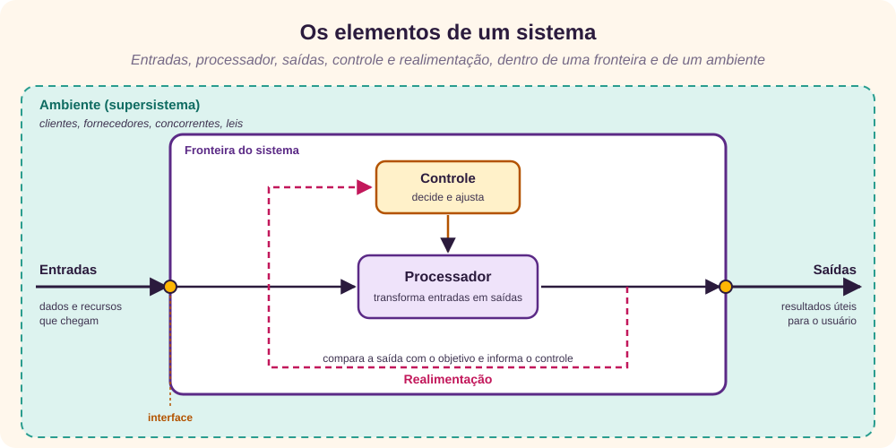
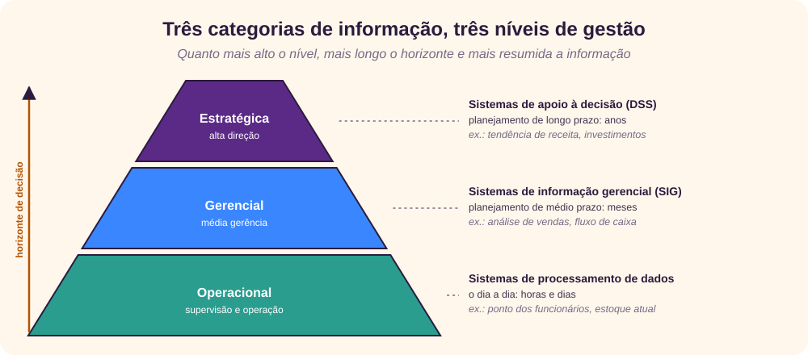
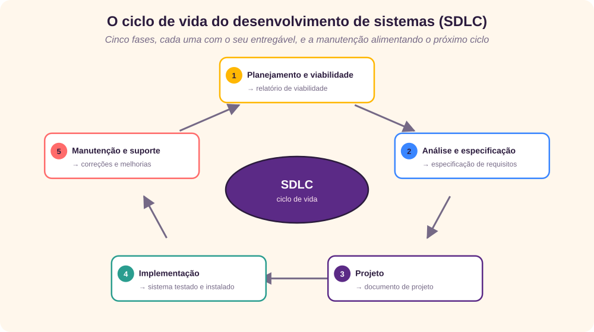
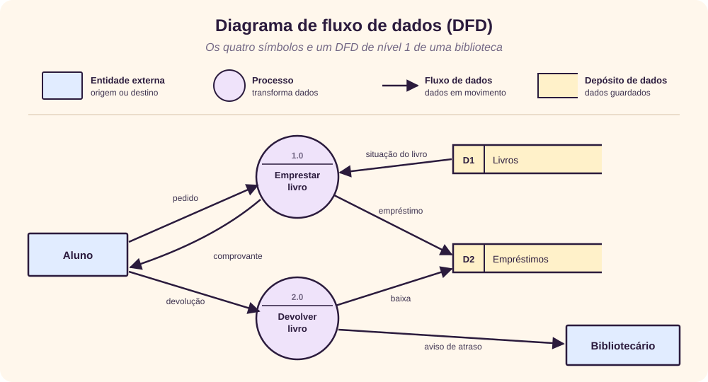
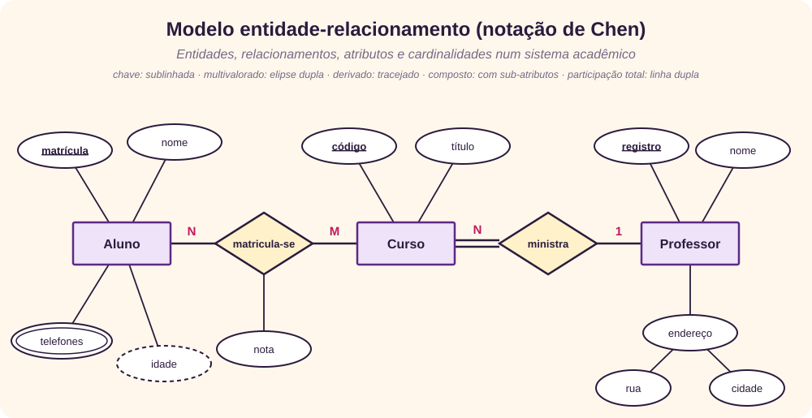
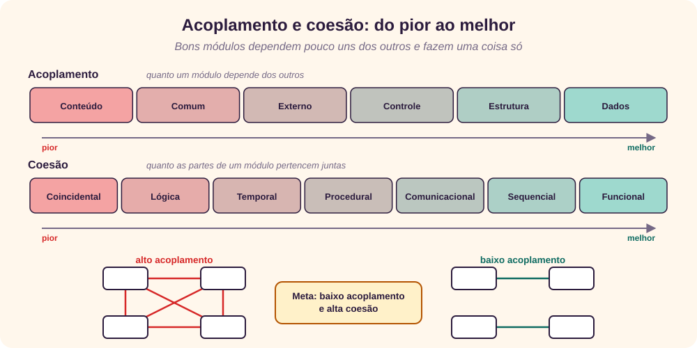
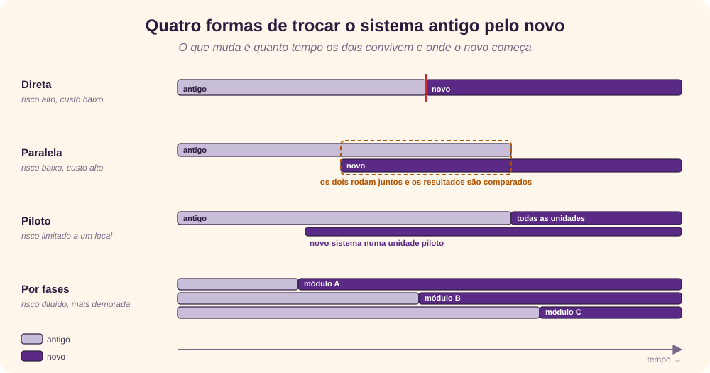
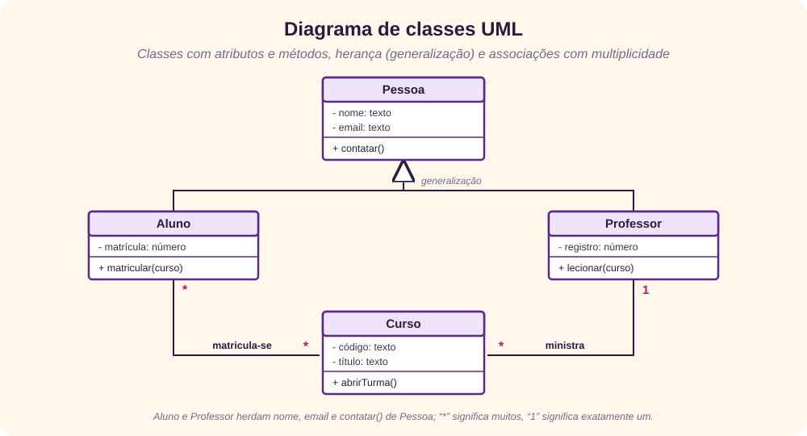
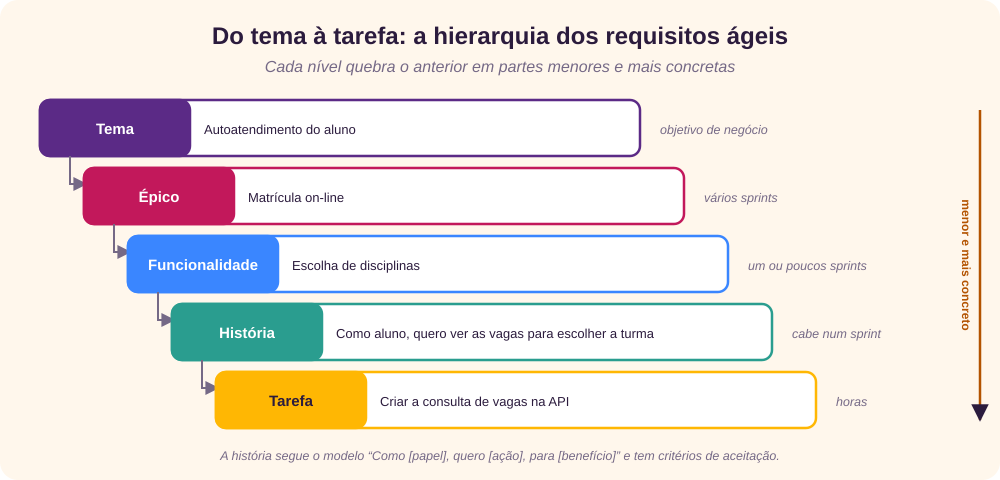

Análise × projeto
Desenvolver sistemas é um processo sistemático, com fases de planejamento, análise, projeto, implantação e manutenção. Este tutorial se concentra nas duas do meio. [1] [2]
| Análise de sistemas | Projeto de sistemas |
|---|---|
| Coleta e interpreta fatos, identifica problemas e decompõe o sistema em partes. | Planeja o sistema novo, ou a substituição do atual, definindo componentes e módulos que atendam aos requisitos. |
| Estuda o sistema para entender os seus objetivos e fazer as partes funcionarem bem juntas. | Parte de um entendimento profundo do sistema antigo para decidir como usar melhor a tecnologia. |
| Responde: o que o sistema deve fazer? | Responde: como o sistema vai fazer? |
A análise e projeto de sistemas olha ao mesmo tempo para três coisas: os sistemas, os processos e a tecnologia. [3] [4]
O que é um sistema
A palavra vem do grego systema, um conjunto organizado de partes. Um sistema é um agrupamento ordenado de componentes interdependentes, ligados segundo um plano para atingir um objetivo específico. Exemplos: controle de tráfego, folha de pagamento, biblioteca automatizada, gestão de pessoas.
Todo sistema tem três restrições básicas:
- tem estrutura e comportamento pensados para um objetivo predefinido;
- seus componentes são interligados e interdependentes;
- os objetivos da organização têm prioridade sobre os dos subsistemas.
Propriedades
- Organização: estrutura e ordem entre os componentes.
- Interação: a forma como os componentes operam entre si, como compras e produção, ou folha de pagamento e pessoal.
- Interdependência: a saída de um subsistema é a entrada de outro.
- Integração: as partes trabalham juntas, mesmo que cada uma tenha uma função própria.
- Objetivo central: pode ser real ou apenas declarado; não é raro uma organização anunciar um objetivo e operar em função de outro. Os usuários precisam conhecê-lo cedo na análise.
Elementos

- Entradas e saídas: as entradas são o que entra para ser processado; as saídas, o resultado útil para o usuário.
- Processador: transforma entradas em saídas. Quando a especificação da saída muda, o processamento muda junto.
- Controle: o subsistema de decisão que orienta entradas, processamento e saídas.
- Realimentação (feedback): compara a saída com o objetivo e informa o controle. Na teoria de sistemas, a realimentação negativa corrige o desvio e estabiliza o sistema; a positiva reforça a tendência atual. [6]
- Ambiente: o “supersistema” em que a organização opera, com fornecedores, concorrentes e leis que impõem restrições.
- Fronteiras e interfaces: a fronteira define o que está dentro do sistema e a sua esfera de controle; as interfaces são os pontos de contato com outros sistemas.
Tipos, modelos e informação
Tipos de sistema
| Classificação | Um tipo | O outro |
|---|---|---|
| Físico × abstrato | Tangível, como os computadores de um centro de dados. | Conceitual, como uma fórmula ou um modelo. |
| Aberto × fechado | Troca entradas e saídas com o ambiente, como um sistema de informação. | Isolado do ambiente; raro na prática. |
| Adaptativo × não adaptativo | Reage ao ambiente para sobreviver, como pessoas e animais. | Não reage, como uma máquina simples. |
| Permanente × temporário | Dura muito tempo, como políticas de negócio. | Montado para um evento e desmontado depois. |
| Natural × fabricado | Criado pela natureza, como o sistema solar. | Feito pelo homem, como barragens e trens. |
| Determinístico × probabilístico | Comportamento previsível e conhecido. | Resultado incerto, como a previsão do tempo. |
| Social, homem-máquina, máquina | Feito de pessoas (um clube); de pessoas e máquinas juntas (programar um computador); ou só de máquinas (um robô autônomo). | |
Os sistemas de informação feitos pelo homem reúnem hardware, software, comunicação, dados e aplicações para produzir a informação de que a organização precisa. Podem ser formais (memorandos e instruções que descem da direção), informais (a rede de colegas que resolve o dia a dia) ou baseados em computador (reservas, bancos, bibliotecas).
Modelos de sistema
- Esquemático: um diagrama em duas dimensões com os elementos e as suas ligações.
- De fluxo: mostra o fluxo ordenado de material, energia e informação; o PERT é um exemplo.
- Estático: representa um par de relações, como atividade e tempo; o gráfico de Gantt é um exemplo.
- Dinâmico: mostra o estado em mudança constante, com entradas, processador, programas e saídas.
Categorias de informação

Ciclo de vida (SDLC)
O ciclo de vida de desenvolvimento de sistemas (SDLC) é um modelo conceitual com políticas e procedimentos para criar ou alterar sistemas. Um bom SDLC entrega um sistema de qualidade, que atende ao cliente, dentro de prazo e custo, e funciona bem na infraestrutura atual e futura. [5]

- Planejamento e viabilidade: define o problema e o escopo, os objetivos do sistema novo, riscos, restrições, integração e segurança; termina com o relatório de viabilidade e o cronograma.
- Análise e especificação: levanta, analisa e valida as informações, define requisitos e protótipos, avalia alternativas e prioriza; termina com a especificação de requisitos de software (SRS).
- Projeto: desenha a aplicação, a rede, os bancos de dados, as interfaces com o usuário e com outros sistemas; cria planos de contingência, treinamento, manutenção e operação; termina com o documento de projeto.
- Implementação: codifica, integra os módulos, testa segundo o plano de testes e instala o sistema no seu ambiente.
- Manutenção e suporte: atende os usuários, corrige os defeitos que sobraram e incorpora novos requisitos.
O analista de sistemas
É quem conhece o sistema a fundo e conduz o projeto, alinhando os objetivos do sistema de informação aos da organização. Suas principais funções:
- entender os requisitos dos usuários com técnicas de levantamento e priorizá-los por consenso;
- analisar e avaliar até chegar a um sistema adequado e fácil de usar;
- propor alternativas, escolher a melhor e quantificar custos e benefícios;
- escrever especificações que usuários e programadores entendam;
- garantir um projeto lógico modular e planejar avaliações periódicas depois da entrada em produção.
| Habilidade | O que inclui |
|---|---|
| Interpessoal | Fazer a ponte entre usuários e programadores, facilitar grupos, liderar equipes pequenas, gerenciar expectativas, comunicar e ensinar. |
| Analítica | Conhecer a organização, identificar, analisar e resolver problemas, avaliar prós e contras, ter bom senso e curiosidade. |
| Gerencial | Entender o vocabulário e as práticas dos usuários, gerenciar recursos, projetos, mudanças e riscos. |
| Técnica | Conhecer computadores, software, ferramentas de projeto e acompanhar as novas tecnologias. |
Levantamento de requisitos
Um requisito é uma característica essencial do sistema novo: capturar ou processar dados, controlar atividades, produzir informação ou apoiar a gestão. Determinar requisitos envolve três atividades:
- Antecipação: prever características a partir da experiência. Ajuda a olhar áreas que passariam despercebidas, mas pode introduzir vieses.
- Investigação: estudar e documentar o sistema atual com técnicas de levantamento, protótipos e ferramentas; é o coração da análise.
- Especificação: analisar os dados levantados, identificar os requisitos essenciais e descrever o sistema novo.
O resultado é a especificação de requisitos de software (SRS), que deve ser completa, sem ambiguidade e sem jargão, cobrir as necessidades operacionais, táticas e estratégicas e usar recursos gráficos. A antiga norma IEEE 830 sobre SRS foi substituída pela ISO/IEC/IEEE 29148. [10]
Técnicas de levantamento
| Técnica | Como funciona | Quando brilha |
|---|---|---|
| Entrevista | Estruturada (perguntas padronizadas, abertas ou fechadas) ou não estruturada (conversa livre). | Informação qualitativa, assuntos complexos, validação imediata das respostas. |
| Questionário | Perguntas abertas, para explorar, ou fechadas, com as respostas possíveis já listadas. | Muitas pessoas, em locais diferentes; opiniões e dados estatísticos com confidencialidade. |
| Análise de documentos | Estudo de registros, procedimentos e formulários existentes. | Entender rápido as transações e operações atuais antes de envolver outras pessoas. |
| Observação | O analista vê pessoas, eventos e objetos no ambiente de trabalho. | Quando os dados relatados são duvidosos ou o processo é difícil de explicar. |
| JAD | Oficinas intensivas com donos, usuários, analistas e desenvolvedores, conduzidas por um facilitador. | Troca meses de entrevistas por dias de trabalho conjunto; aumenta o comprometimento. |
| Pesquisa secundária | Leitura de informações já existentes, internas ou externas. | Barata e rápida; orienta a pesquisa primária. |
O JAD (Joint Application Design) foi criado por Arnie Lind na IBM Canadá, em 1974, e formalizado depois por Tony Crawford e Chuck Morris. [9]
Qualidades de um bom requisito
| Qualidade | Requisito ruim | Requisito bom |
|---|---|---|
| Atômico | Alunos poderão se matricular em cursos de graduação e pós-graduação. | 1. Alunos poderão se matricular em cursos de graduação. 2. Alunos poderão se matricular em cursos de pós-graduação. |
| Identificado de forma única | Dois requisitos com o mesmo número 1. | 1. Matrícula · 1.1 Graduação · 1.2 Pós-graduação. |
| Completo | O professor entra com usuário, senha e “outras informações relevantes”. | O professor entra com usuário, senha e código do departamento. |
| Consistente e sem ambiguidade | O aluno faz graduação ou pós, nunca os dois; mas alguns cursos são abertos aos dois. | O aluno faz graduação ou pós, nunca os dois. |
| Rastreável | Manter dados do aluno (ligado a qual requisito de negócio?). | Manter dados do aluno, ligado ao requisito de negócio 4.1. |
| Priorizado | Todos os requisitos com prioridade 1. | Cadastrar aluno: 1 · manter usuário: 2 · matricular: 3 · ver boletim: 4. |
| Testável | Cada página carrega em tempo aceitável. | As páginas de cadastro e matrícula carregam em até 5 segundos. |
Estudo de viabilidade
É a investigação preliminar que ajuda a direção a decidir se vale a pena desenvolver o sistema. O objetivo é entender o escopo do problema, não resolvê-lo. O resultado é uma proposta formal de sistema, que serve de documento de decisão.
Passos: formar a equipe e nomear um líder; desenhar fluxogramas do sistema; identificar as deficiências do atual e definir metas; listar as alternativas; avaliar a viabilidade de cada uma; comparar desempenho e custo; classificar e escolher a melhor; e levar a proposta à direção.
| Viabilidade | Pergunta que responde |
|---|---|
| Econômica | Os benefícios superam os custos? A análise de custo e benefício prefere a alternativa com retorno maior e mais rápido e com menos risco. |
| Técnica | A tecnologia atual dá conta, ou será preciso ampliar ou comprar recursos? |
| Operacional | O sistema vai funcionar na organização, com apoio da direção e aceitação das novas formas de trabalho? |
| Comportamental | Como os usuários vão reagir? Será preciso treinar, realocar ou mudar funções? |
| De cronograma | Dá para terminar no prazo? Os prazos são razoáveis? |
| Legal | O sistema respeita leis e contratos, como a proteção de dados pessoais? |
Na literatura de gestão de projetos, essas dimensões aparecem resumidas na sigla TELOS: técnica, econômica, legal, operacional e de cronograma. [11]
Análise estruturada
A análise estruturada é um método que permite entender o sistema de forma lógica, com ferramentas gráficas que vão da visão geral aos detalhes. Ela é gráfica, divide os processos para dar uma visão clara do fluxo e é lógica, não física: não depende de fornecedor nem de hardware. [12] Suas ferramentas são o DFD, o dicionário de dados, as árvores e tabelas de decisão, o português estruturado e o pseudocódigo.
Diagrama de fluxo de dados (DFD)
Proposto por Larry Constantine e difundido por Ed Yourdon, Tom DeMarco e por Chris Gane e Trish Sarson no fim dos anos 1970, o DFD mostra como os dados fluem entre as funções do sistema: o que é processado, que transformações ocorrem, o que é guardado e para onde vão os resultados. [13] [14]

O diagrama de contexto é o nível 0: mostra o sistema inteiro como um único processo, cercado pelas entidades externas. Depois, cada processo é detalhado em níveis inferiores, de cima para baixo.
| DFD físico | DFD lógico |
|---|---|
| Depende da implementação: mostra quem ou o que executa cada função. | Independe da implementação: mostra só o fluxo de dados entre processos. |
| Detalha hardware, software, arquivos e pessoas. | Descreve os eventos do negócio e os dados de cada evento. |
| Mostra como o sistema opera ou vai operar. | Mostra como o negócio opera. |
Dicionário de dados
Repositório estruturado com a descrição de todos os elementos do DFD: fluxos, depósitos, dados e processos. Melhora a comunicação com o usuário e é a base do banco de dados. [16]
| Nome | Descrição | Tipo e tamanho |
|---|---|---|
ISBN | Número internacional do livro | texto, 13 |
TITULO | Título do livro | texto, 60 |
ASSUNTO | Assuntos do livro | texto, 80 |
AUTOR | Nome do autor | texto, 40 |
Árvore e tabela de decisão
Considere a regra: quem paga adiantado ganha 5% de desconto; quem não paga adiantado só ganha o desconto se a compra for de R$ 10.000 ou mais e for cliente regular.
A tabela de decisão mostra todas as combinações de uma vez. Ela tem quatro quadrantes: condições (acima, à esquerda), entradas de condição (acima, à direita), ações (abaixo, à esquerda) e entradas de ação (abaixo, à direita). S = sim, N = não, – = indiferente, X = executar. [17]
| Condições | Regra 1 | Regra 2 | Regra 3 | Regra 4 |
|---|---|---|---|---|
| Pagou adiantado | S | N | N | N |
| Compra ≥ R$ 10.000 | – | S | S | N |
| Cliente regular | – | S | N | – |
| Ação: 5% de desconto | X | X | ||
| Ação: sem desconto | X | X |
Português estruturado e pseudocódigo
O português estruturado descreve a lógica com frases imperativas e as estruturas da programação estruturada (sequência, decisão e repetição), sem sintaxe rígida. [19] A mesma regra fica assim:
SE o cliente pagou adiantado
ENTÃO dar 5% de desconto
SENÃO
SE a compra for de R$ 10.000 ou mais E o cliente for regular
ENTÃO dar 5% de desconto
SENÃO
não dar desconto
FIM-SE
FIM-SE
O pseudocódigo é parecido, mas já pensa na lógica do programa: independe de linguagem e costuma substituir os fluxogramas no projeto físico.
Qual ferramenta usar
- DFD: para documentar o sistema, em alto ou baixo nível;
- dicionário de dados: para organizar os requisitos de dados;
- português estruturado: quando há muitos laços e ações complexas;
- tabela de decisão: quando há muitas condições e a lógica é complexa;
- árvore de decisão: quando a ordem das condições importa e elas são poucas.
Projeto do sistema e dados
O projeto transforma a SRS num formato implementável e decide como o sistema vai operar. Entradas: declaração de trabalho, plano de requisitos, análise da situação atual e requisitos propostos (modelo conceitual de dados, DFDs revisados e metadados). Saídas: mudanças de infraestrutura e organização, esquema de dados (em geral relacional), metadados, mapa da estrutura do programa, código ou pseudocódigo de cada módulo e um protótipo.
Tipos de projeto
- Lógico: representação abstrata dos fluxos, entradas, saídas e depósitos de dados, com DFDs e modelos E-R.
- Físico: como os dados entram, são validados, processados e exibidos; define mídias, banco de dados, cópias de segurança, plano de testes e de implantação.
- Arquitetural (alto nível): a estrutura e o comportamento do sistema e a relação entre os módulos.
- Detalhado: vem depois do arquitetural e desenvolve cada módulo.
Modelo entidade-relacionamento
O modelo conceitual de dados captura o máximo de significado sobre os dados da organização. O mais usado é o modelo entidade-relacionamento (E-R), publicado por Peter Chen em 1976. [20] [21]
- Entidade: algo distinto do mundo real, como aluno, curso ou fornecedor.
- Relacionamento: uma dependência com significado entre entidades, como “professor ministra curso”.
- Atributo: uma propriedade de uma entidade ou relacionamento, como o nome do aluno.

Entre dois conjuntos de dados há três tipos de relacionamento: um para um (1:1), um para muitos (1:N) e muitos para muitos (N:M). A figura também mostra entidades fracas e atributos-chave, multivalorados, compostos e derivados.
Organização e acesso a arquivos
| Organização | Como os registros ficam | Exemplo |
|---|---|---|
| Serial | Na ordem em que chegam. | Transações de caixa eletrônico |
| Sequencial | Ordenados por um campo-chave. | Lista telefônica |
| Direta (relativa) | Num endereço calculado a partir da chave, por uma função de hash. | Consulta por código |
| Indexada | Com índices que permitem acesso sequencial e direto. | Cadastro de clientes |
O acesso sequencial percorre os registros do primeiro ao último e é eficiente quando se precisa de quase todos; o acesso direto vai ao endereço do registro. Os arquivos de uma organização podem ser: mestre (dados atuais, como clientes), tabela (mestre que muda pouco, como CEPs), transação (movimento do dia a dia, que atualiza o mestre), temporário, espelho (cópia exata, para continuidade), log (histórico de mudanças, para auditoria e recuperação) e arquivo morto (versões históricas).
Estratégias de projeto
- De cima para baixo (top-down): começa no módulo principal e o divide em submódulos cada vez mais simples, até não haver mais o que dividir.
- De baixo para cima (bottom-up): começa pelos módulos mais básicos e os agrupa em módulos maiores, até chegar ao principal. [22]
Projeto estruturado
O projeto estruturado, de Yourdon e Constantine, parte dos DFDs para montar o diagrama de estrutura: caixas que representam módulos, ligadas por linhas que mostram quem chama quem. O objetivo é reduzir a complexidade e aumentar a modularidade. [15] [23]
- o módulo de controle dirige os módulos subordinados; o módulo de biblioteca é reutilizável e pode ser chamado de vários pontos;
- o diagrama é centrado em transformação quando todas as transações seguem o mesmo caminho, e centrado em transação quando seguem caminhos diferentes;
- a modularização permite testar primeiro as interfaces críticas, dividir o trabalho entre vários programadores e reutilizar código.
Acoplamento e coesão
Dois conceitos medem a qualidade de um projeto modular. Acoplamento é quanto um módulo depende dos outros; quanto mais forte, mais difícil implementar e manter. Coesão é quanto as partes de um módulo pertencem juntas. [24] [25]

- Acoplamento, do pior ao melhor: de conteúdo (um módulo altera o interior de outro); comum (compartilham dados globais); externo (compartilham um formato ou protocolo externo); de controle (um passa parâmetros que controlam o outro); de estrutura (passam estruturas de dados inteiras); de dados (passam só os dados necessários).
- Coesão, da pior à melhor: coincidental (partes sem relação); lógica (funções parecidas agrupadas); temporal (executadas no mesmo momento, como a inicialização); procedural (seguem uma ordem de execução); comunicacional (operam sobre os mesmos dados); sequencial (a saída de uma parte é a entrada da seguinte); funcional (tudo contribui para uma única tarefa).
Entrada, saída e formulários
Projeto de entrada
A qualidade da saída depende da qualidade da entrada. Os objetivos são: desenhar a entrada de dados e os seus procedimentos, reduzir o volume digitado, desenhar documentos-fonte e telas, e criar validações. Para evitar erros: formulários claros, com espaço suficiente e instruções; menos toques de teclado; e retorno imediato de erro. Os métodos incluem entrada em lote, on-line, por formulários legíveis por máquina e interativa.
Os controles de integridade da entrada verificam formato e completude de cada campo, e os registros de transação criam a trilha de auditoria de todas as mudanças no banco de dados.
Projeto de saída
A saída deve servir ao propósito, atender o usuário, ter a quantidade e o formato certos, chegar à pessoa certa e a tempo. As saídas externas vão para fora do sistema (algumas voltam como entrada, como um boleto); as internas apoiam a gestão, em três tipos de relatório:
- detalhado: a informação quase sem filtro;
- resumo: tendências e totais, para quem não quer detalhes;
- de exceção: só o que foge de um padrão ou limite.
Relatórios devem trazer data e hora de emissão, título e paginação; formulários pré-impressos, número de versão e data de vigência.
Formulários
Formulários servem para entrada de dados; relatórios, só para leitura. Um bom formulário é simples, com sequência lógica e rótulos claros, cumpre o propósito, facilita o preenchimento correto e a navegação. O texto original ainda descreve formulários em papel (planos, jogos com carbono, contínuos e sem carbono), hoje raros.
Documentação
Documentar reduz o tempo de parada, corta custos, acelera a manutenção, facilita o treinamento e a comunicação entre técnicos e não técnicos. A documentação precisa ser atualizada com regularidade. São quatro tipos:
| Tipo | Para quem | O que contém |
|---|---|---|
| De programa | Programadores | Entradas, saídas e lógica de cada módulo, com comentários internos e externos. |
| De sistema | Equipe técnica | Especificação técnica: funções, fluxo geral, dicionário de dados, DFDs, modelos, telas e a solicitação que originou o projeto. |
| De operação | Operadores | Agendamento de processamentos, arquivos de entrada e saída, listas de distribuição, mensagens de erro, procedimentos de reinício e segurança. |
| De usuário | Usuários | Visão geral, telas e menus, exemplos de relatórios, regras de segurança, como pedir mudanças e relatar problemas, exceções e perguntas frequentes. |
Testes, implantação e manutenção
Testes e garantia da qualidade
O teste verifica se o software faz o que os requisitos pedem; um teste bem-sucedido é o que encontra erros. Ele começa pelos módulos e avança até o sistema integrado, seguindo uma estratégia, um plano, casos e procedimentos de teste e o registro dos resultados. Os tipos principais são o unitário, o de integração e o funcional (positivo, com entradas válidas, e negativo, com entradas inválidas). O tutorial Testes de software trata o assunto em detalhe.
A garantia da qualidade de software (SQA) revisa produtos e processos ao longo de todo o ciclo, em quatro níveis: revisão do código contra as regras (walk-through), compilação e ligação em todas as plataformas, execução em condições variadas e teste de desempenho.
Treinamento
Um sistema bem projetado pode fracassar se for mal operado. Os operadores aprendem as rotinas, as falhas comuns e o que fazer em cada uma; os usuários aprendem a operar o sistema e a resolver problemas simples. O treinamento pode ser conduzido por instrutor, em sala presencial ou virtual, ou no ritmo do aluno, com cursos multimídia ou pela web.
Conversão
É a migração do sistema antigo para o novo. O plano de conversão lista os arquivos a converter, os documentos e procedimentos novos, os controles, os responsáveis e o cronograma.

| Método | Como funciona | Vantagens | Desvantagens |
|---|---|---|---|
| Direta | O novo substitui o antigo de uma vez. | Benefício imediato; menor custo; obriga a usar o novo. | Sem volta se der errado; exige planejamento cuidadoso. |
| Paralela | Os dois rodam juntos por um tempo. | Permite comparar resultados; tem volta segura. | Custo alto, trabalho em dobro; usuários podem se apegar ao antigo. |
| Piloto | O sistema completo entra primeiro numa unidade ou grupo e depois nos demais. | Teste real com risco limitado a um local. | Se o piloto não for representativo, problemas aparecem depois. |
| Por fases | O novo entra aos poucos, módulo a módulo ou etapa a etapa. | Risco diluído; aprendizado gradual. | Mais demorada; exige interfaces temporárias entre o novo e o antigo. |
Depois da implantação, a revisão pós-implantação (PIER) compara custos, benefícios e prazos reais com os previstos, aponta forças e fraquezas e melhora as estimativas dos próximos projetos. Participam a equipe do projeto, a direção, os usuários e a gestão estratégica.
Manutenção
Manter é conservar o sistema de acordo com os seus requisitos; melhorar é incorporar requisitos novos. A norma ISO/IEC 14764 classifica a manutenção em quatro tipos: [26]
- corretiva: corrige defeitos encontrados, em geral relatados pelos usuários;
- adaptativa: adapta o sistema a mudanças no ambiente, como um novo sistema operacional ou uma nova lei;
- perfectiva: melhora desempenho, usabilidade ou acrescenta funções pedidas pelos usuários;
- preventiva: antecipa problemas que ainda não se manifestaram.
Segurança e auditoria
Auditoria de sistemas
A auditoria revisa o desempenho de um sistema em operação para comparar o real com o planejado, verificar se os objetivos continuam válidos e foram atingidos, garantir a confiabilidade das informações e proteger contra fraudes. O auditor deve participar desde o início do desenvolvimento, para que o sistema já nasça auditável.
A trilha de auditoria (audit trail) é o registro de quem acessou o sistema e o que fez em cada período; permite rastrear como os dados mudaram. [27] A auditoria pode ser feita em volta do computador (processar manualmente amostras de entrada e comparar com a saída do sistema) ou através do computador (examinar resultados intermediários pela trilha e por totais de controle).
Segurança
Proteger dados, software e hardware contra roubo, acesso ou alteração não autorizados e danos acidentais. Envolve a privacidade (ninguém acessa os dados de alguém sem permissão) e a integridade (a qualidade e a confiabilidade dos dados). As medidas de controle incluem:
- cópias de segurança: completas periódicas, incrementais mais frequentes, guardadas em local remoto e, em sistemas críticos, espelhamento das transações;
- controle de acesso físico: fechaduras, biometria, crachás e registro de quem lê ou altera dados;
- controles lógicos: senhas, criptografia, treinamento dos funcionários, antivírus e firewall.
Análise de risco
Risco é a possibilidade de perder algo de valor. A análise identifica os componentes do sistema, as ameaças a cada um e o prejuízo se elas se concretizarem. A gestão de risco é contínua: identificar medidas de segurança, calcular o custo de cada uma, compará-lo com a perda esperada, escolher e implantar as medidas e revisá-las periodicamente.
Orientação a objetos e UML
Na abordagem orientada a objetos, estrutura e comportamento ficam juntos em pequenos módulos que combinam dados e processos. Ela facilita mudanças a baixo custo, promove o reúso, simplifica a integração de componentes e o projeto de sistemas distribuídos. [28]
Elementos e características
- Objeto: algo do domínio do problema, identificado por dados e comportamento, como um aluno ou uma conta bancária.
- Classe: o molde que agrupa objetos com os mesmos atributos (dados) e métodos (comportamento).
- Mensagem: a chamada de um objeto a um método de outro.
- Encapsulamento: os dados de um objeto ficam escondidos e só são acessados pelos seus métodos, o que permite mudá-los sem afetar o resto.
- Abstração: ficar só com os atributos e métodos essenciais para o problema.
- Herança: criar subclasses que herdam atributos e operações de uma classe existente.
- Polimorfismo: a mesma operação é executada de formas diferentes por classes diferentes.
- Relacionamentos: associação (duas classes colaboram), agregação (todo e partes) e generalização (classe filha baseada na mãe).
UML
A Linguagem de Modelagem Unificada (UML) é a linguagem visual padrão para modelar sistemas orientados a objetos, mantida pelo Object Management Group (OMG); a versão atual é a 2.5.1, de 2017. [29] [30]

- Modelos estáticos mostram a estrutura: diagramas de classes, de objetos e de casos de uso.
- Modelos dinâmicos mostram o comportamento em resposta a eventos: diagramas de sequência, de comunicação, de estados e de atividades.
- As operações sobre objetos são de criação e destruição (incluir um funcionário), consulta (ler o endereço, sem efeito colateral) e atualização (mudar o endereço).
Estruturada × orientada a objetos
| Abordagem estruturada | Abordagem orientada a objetos | |
|---|---|---|
| Decomposição | Em funções e processos | Em classes e objetos, com dados e comportamento juntos |
| Direção típica | De cima para baixo | Combina de cima para baixo e de baixo para cima |
| Comunicação | Chamadas de função | Troca de mensagens entre objetos |
| Reúso | Por bibliotecas de funções | Por herança, composição e componentes |
| Modelos | DFD, dicionário de dados, E-R | Casos de uso, classes, sequência, estados (UML) |
| Gestão do projeto | Fases bem definidas, mais fáceis de acompanhar | Iterativa; as fronteiras entre fases são menos nítidas |
| Indicada para | Processamento de dados, sistemas embarcados e de tempo real | A maioria das aplicações de negócio e sistemas que evoluem muito |
O ciclo orientado a objetos tem análise (com o modelo de casos de uso e as classes do domínio), projeto (refina classes, atributos, métodos, interface e acesso a dados), prototipação, implementação e testes incrementais. A implementação pode usar o desenvolvimento baseado em componentes (montar o sistema com peças prontas e testadas) ou o desenvolvimento rápido de aplicações (RAD), que complementa o SDLC com ferramentas para construir e entregar em incrementos. [31]
Casos de uso e histórias
Um caso de uso descreve a interação entre um usuário e o sistema para atingir um objetivo, com um fluxo básico e fluxos alternativos. [32]
| Caso de uso: Registrar usuário | |
|---|---|
| Resumo | Para ter informação personalizada, fazer pedidos ou outras transações, o novo usuário registra um nome de usuário e uma senha. |
| Fluxo básico | 1. O usuário pede para se registrar. 2. O sistema pede usuário e senha. 3. O usuário informa. 4. O sistema verifica se o nome de usuário já existe. 5. O sistema pede nome*, endereço, CEP*, telefone e e-mail (* obrigatórios). 6. O usuário informa. 7. O sistema define a localização e o nível de acesso e grava os dados. 8. O sistema executa o caso de uso Registrar preferências. 9. O sistema abre a sessão e exibe uma mensagem de boas-vindas. |
| Fluxos alternativos | Passo 4: se o nome já existe, o sistema avisa e volta ao passo 2. Passo 6: se falta um campo obrigatório, o sistema avisa e repete o passo 5. |
| Ponto de extensão | Registrar preferências |
| Pré-condição | Nenhuma |
| Pós-condição | O usuário acessa dados e funções conforme o seu nível de acesso. |
| Regras de negócio | A localização é a unidade mais próxima do CEP. Níveis de acesso: 0, 1 ou 2; o padrão é 0. |
Nos métodos ágeis, os requisitos costumam ser organizados numa hierarquia que vai do objetivo de negócio à tarefa técnica, e o requisito em si é escrito como história de usuário. [33]

Revisão rápida
Tente responder antes de abrir cada pergunta.
1. Qual a diferença entre análise e projeto de sistemas?
A análise define o que o sistema deve fazer, a partir do estudo do problema; o projeto define como ele vai fazer, com componentes, dados, interfaces e módulos.
2. Quais são os elementos de um sistema?
Entradas, processador, saídas, controle, realimentação, ambiente, fronteiras e interfaces.
3. Quais são os quatro símbolos de um DFD?
Entidade externa (origem ou destino), processo (transforma dados), fluxo de dados e depósito de dados.
4. Quando usar uma tabela de decisão e quando usar uma árvore de decisão?
Tabela, quando há muitas condições e combinações; árvore, quando as condições são poucas e a ordem em que são testadas importa.
5. No modelo E-R, como fica “um aluno se matricula em vários cursos, e um curso tem vários alunos”?
Um relacionamento muitos para muitos (N:M) entre as entidades Aluno e Curso, que pode ter atributos próprios, como a nota.
6. Qual é a meta em acoplamento e coesão?
Baixo acoplamento (módulos pouco dependentes, trocando só os dados necessários) e alta coesão (cada módulo com uma única função).
7. Qual a diferença entre conversão direta e paralela?
Na direta, o novo sistema substitui o antigo de uma vez: barato, mas sem volta. Na paralela, os dois rodam juntos até o novo se provar: seguro, mas caro.
8. Quais são os quatro tipos de manutenção da ISO/IEC 14764?
Corretiva (corrige defeitos), adaptativa (adapta a mudanças no ambiente), perfectiva (melhora ou acrescenta funções) e preventiva (antecipa problemas).
Referências
- Giovani Perotto Mesquita, “System Analysis and Design”, GitHub Gist, texto original deste tutorial, gist.github.com/GiovaniPM/506ed93c3796fbaeb52effff0dcda2ca.
- Tutorialspoint, “System Analysis and Design Tutorial”, acesso em 25/09/2026, tutorialspoint.com/system_analysis_and_design/index.htm.
- Wikipedia (em inglês), “Systems analysis”, acesso em 25/09/2026, en.wikipedia.org/wiki/Systems_analysis.
- Wikipedia (em inglês), “Systems design”, acesso em 25/09/2026, en.wikipedia.org/wiki/Systems_design.
- Wikipedia (em inglês), “Systems development life cycle”, acesso em 25/09/2026, en.wikipedia.org/wiki/Systems_development_life_cycle.
- Wikipedia (em inglês), “Feedback”, acesso em 25/09/2026, en.wikipedia.org/wiki/Feedback.
- Wikipedia (em inglês), “Management information system”, acesso em 25/09/2026, en.wikipedia.org/wiki/Management_information_system.
- Wikipedia (em inglês), “Decision support system”, acesso em 25/09/2026, en.wikipedia.org/wiki/Decision_support_system.
- Wikipedia (em inglês), “Joint application design”, acesso em 25/09/2026, en.wikipedia.org/wiki/Joint_application_design.
- Wikipedia (em inglês), “Software requirements specification”, acesso em 25/09/2026, en.wikipedia.org/wiki/Software_requirements_specification.
- Wikipedia (em inglês), “Feasibility study”, acesso em 25/09/2026, en.wikipedia.org/wiki/Feasibility_study.
- Wikipedia (em inglês), “Structured analysis”, acesso em 25/09/2026, en.wikipedia.org/wiki/Structured_analysis.
- Wikipedia (em inglês), “Data-flow diagram”, acesso em 25/09/2026, en.wikipedia.org/wiki/Data-flow_diagram.
- Tom DeMarco, Structured Analysis and System Specification, Prentice Hall, 1979.
- Edward Yourdon e Larry L. Constantine, Structured Design, Prentice Hall, 1979.
- Wikipedia (em inglês), “Data dictionary”, acesso em 25/09/2026, en.wikipedia.org/wiki/Data_dictionary.
- Wikipedia (em inglês), “Decision table”, acesso em 25/09/2026, en.wikipedia.org/wiki/Decision_table.
- Wikipedia (em inglês), “Decision tree”, acesso em 25/09/2026, en.wikipedia.org/wiki/Decision_tree.
- Wikipedia (em inglês), “Structured English”, acesso em 25/09/2026, en.wikipedia.org/wiki/Structured_English.
- Peter P. Chen, “The Entity-Relationship Model: Toward a Unified View of Data”, ACM Transactions on Database Systems, v. 1, n. 1, 1976.
- Wikipedia (em inglês), “Entity–relationship model”, acesso em 25/09/2026, en.wikipedia.org/wiki/Entity–relationship_model.
- Wikipedia (em inglês), “Top-down and bottom-up design”, acesso em 25/09/2026, en.wikipedia.org/wiki/Top-down_and_bottom-up_design.
- Wikipedia (em inglês), “Structure chart”, acesso em 25/09/2026, en.wikipedia.org/wiki/Structure_chart.
- Wikipedia (em inglês), “Coupling (computer programming)”, acesso em 25/09/2026, en.wikipedia.org/wiki/Coupling_(computer_programming).
- Wikipedia (em inglês), “Cohesion (computer science)”, acesso em 25/09/2026, en.wikipedia.org/wiki/Cohesion_(computer_science).
- Wikipedia (em inglês), “Software maintenance”, acesso em 25/09/2026, en.wikipedia.org/wiki/Software_maintenance.
- Wikipedia (em inglês), “Audit trail”, acesso em 25/09/2026, en.wikipedia.org/wiki/Audit_trail.
- Wikipedia (em inglês), “Object-oriented analysis and design”, acesso em 25/09/2026, en.wikipedia.org/wiki/Object-oriented_analysis_and_design.
- Wikipedia (em inglês), “Unified Modeling Language”, acesso em 25/09/2026, en.wikipedia.org/wiki/Unified_Modeling_Language.
- Object Management Group, “Unified Modeling Language (UML)”, especificação, acesso em 25/09/2026, omg.org/spec/UML.
- Wikipedia (em inglês), “Rapid application development”, acesso em 25/09/2026, en.wikipedia.org/wiki/Rapid_application_development.
- Wikipedia (em inglês), “Use case”, acesso em 25/09/2026, en.wikipedia.org/wiki/Use_case.
- Wikipedia (em inglês), “User story”, acesso em 25/09/2026, en.wikipedia.org/wiki/User_story.